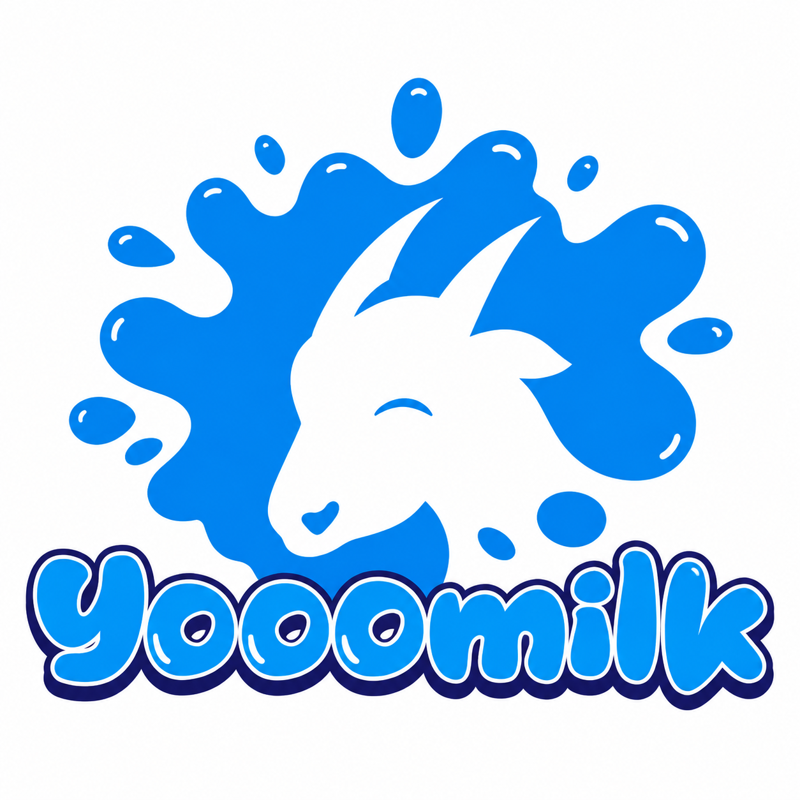
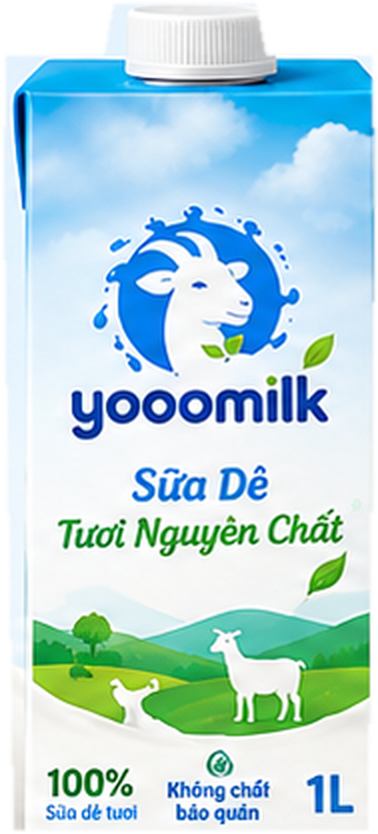

Chất lượng thông tin
Trình bày thông tin sản phẩm rõ ràng, giúp khách hàng thuận tiện tìm hiểu và đối chiếu trước khi lựa chọn.


YOOOYoooMILK là thương hiệu giới thiệu và kinh doanh các sản phẩm sữa dê tươi, sữa dê nguyên chất, sữa dê ít đường, sữa dê Organic, sữa hạt hạnh nhân và sữa chua thông qua nền tảng trực tuyến.
Website được xây dựng nhằm giúp khách hàng dễ dàng tìm kiếm sản phẩm, tham khảo thông tin, dung tích và giá bán. Với danh mục đa dạng, khách hàng có thể tìm hiểu từng dòng sản phẩm và lựa chọn theo sở thích, nhu cầu của bản thân và gia đình.
“Một giọt tươi – Một ngày lành”Khám phá các dòng sản phẩm ↗
Chúng tôi tin rằng trải nghiệm lựa chọn sản phẩm sẽ thuận tiện hơn khi khách hàng có thể tiếp cận thông tin rõ ràng, so sánh các dòng sản phẩm và tìm thấy lựa chọn phù hợp với nhu cầu của mình.
Trình bày thông tin sản phẩm rõ ràng, giúp khách hàng thuận tiện tìm hiểu và đối chiếu trước khi lựa chọn.
Giới thiệu các nhóm sản phẩm từ sữa dê, sữa hạt đến sữa chua, đáp ứng những sở thích và nhu cầu khác nhau.
Hỗ trợ khách hàng tiếp cận thông tin sản phẩm và gửi yêu cầu tư vấn khi cần thiết.
Khám phá danh mục sản phẩm YoooMILK và tham khảo thông tin trước khi đưa ra lựa chọn.